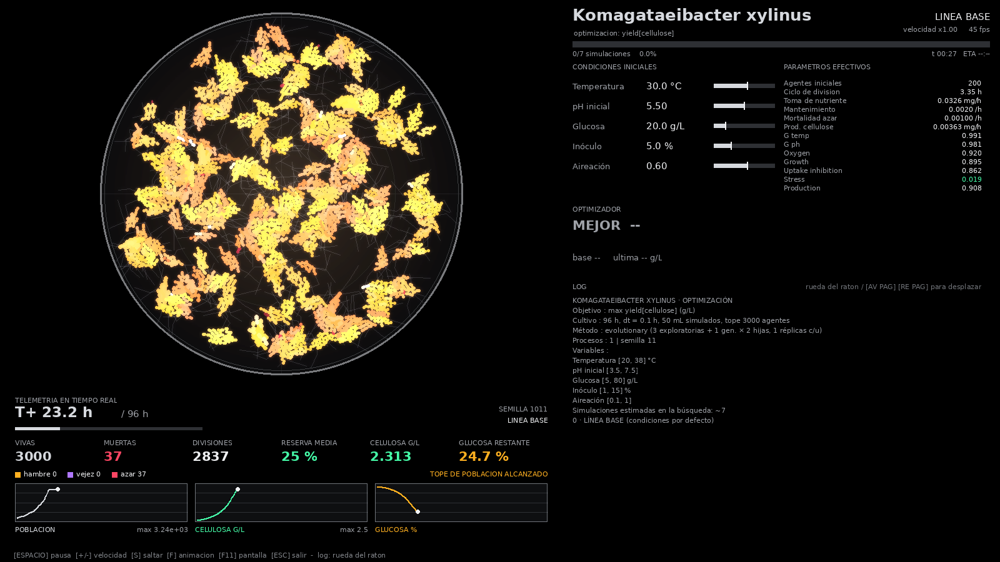
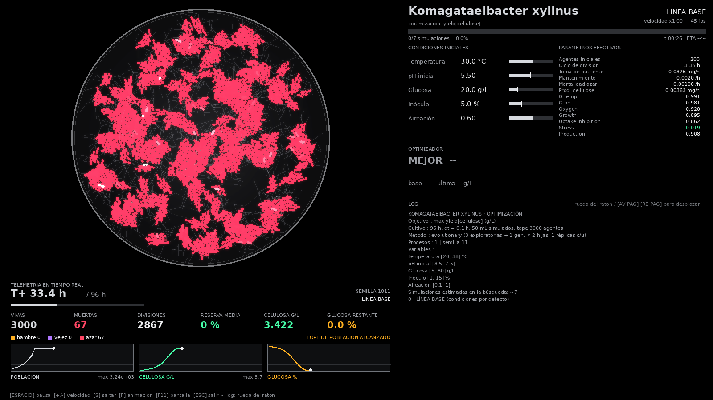

satsh · librería de Pythonsatsh · Python library
LUNAGEN
Simula un cultivo célula por célula y encuentra las condiciones óptimas. Configurable, optimizable y con visualización en vivo.Simulate a culture cell by cell and find the optimal conditions. Configurable, optimizable and with a live visualization.
pip install lunagenResumenOverview
De la célula al óptimoFrom the cell to the optimum
El motor no sabe nada de ningún organismo concreto: todo lo específico se declara. Con el mismo código puedes estudiar celulosa bacteriana, ácido láctico, etanol, tiempo de vida o reproducción.The engine knows nothing about any particular organism: everything specific is declared. With the same code you can study bacterial cellulose, lactic acid, ethanol, lifespan or reproduction.
SimulaSimulate
Un agente por célula: metabolismo, crecimiento, división, muerte y producción de uno o varios compuestos. Determinista para cada semilla.One agent per cell: metabolism, growth, division, death and production of one or several compounds. Deterministic for every seed.
OptimizaOptimize
Exploración, refinamiento evolutivo y validación con semillas nuevas. Maximiza o minimiza lo que definas, con restricciones y varios objetivos.Exploration, evolutionary refinement and validation with fresh seeds. Maximize or minimize whatever you define, with constraints and several goals.
DeclaraDeclare
Variables, curvas de respuesta y productos descritos en unas decenas de líneas. Recalibra con perillas, sin tocar el motor.Variables, response curves and products described in a few dozen lines. Recalibrate with knobs, without touching the engine.
VisualizaVisualize
Cada simulación se anima en cámara rápida: caja Petri, telemetría en tiempo real, optimizador y log, estilo consola de ciencia ficción.Every simulation is animated in fast motion: Petri dish, real-time telemetry, optimizer and log, in a sci-fi console style.
Elige tus modelosChoose your models
Cinéticas de toma de nutriente, curvas de respuesta, un motor de ecuaciones diferenciales y redes neuronales con capas y activaciones estilo TensorFlow. Todo opcional.Nutrient-uptake kinetics, response curves, a differential-equation engine and neural networks with TensorFlow-style layers and activations. All optional.
Cómo funcionaHow it works
Cuatro pasosFour steps
Describe el organismoDescribe the organism
Variables que se controlan, cómo responde al entorno y qué produce. Hay un preset de Komagataeibacter xylinus listo para usar.The variables you control, how it responds to the environment and what it produces. A ready-to-use Komagataeibacter xylinus preset is included.
Elige qué medirChoose what to measure
Rendimiento de un producto, eficiencia, tasa de crecimiento, tiempo de vida, supervivencia… o una métrica propia.A product's yield, efficiency, growth rate, lifespan, survival… or a metric of your own.
OptimizaOptimize
Línea base, exploración, refinamiento evolutivo y validación. Todo se imprime en consola y se anima en la ventana.Baseline, exploration, evolutionary refinement and validation. Everything is printed to the console and animated in the window.
ExportaExport
evaluations.csv,results.jsony un XML con la mejor condición, listo para Unity.evaluations.csv,results.jsonand an XML with the best condition, ready for Unity.
Ventana en vivoLive window
Mira cada simulación trabajarWatch every simulation work
Quién vive, muere o se divide; el tamaño de cada cápsula es su fase del ciclo celular y su color, su reserva; las fibras son lo producido y el brillo ámbar, el nutriente que queda. Solo las posiciones son decorativas. La ventana puede mostrarse en inglés o en español.Who lives, dies or divides; the size of each capsule is its phase of the cell cycle and its color its reserve; the fibers are what was produced and the amber glow the nutrient left. Only the positions are decorative. The window can be shown in English or Spanish.


CódigoCode
Pocas líneas, muchas preguntasA few lines, many questions
import lunagen as lg
if __name__ == "__main__":
organismo = lg.presets.komagataeibacter_xylinus()
estudio = lg.Study(organismo, objective="yield[cellulose]", workers=4)
resultado = estudio.optimize(samples=60, generations=8, population=16, viz=True)
print(resultado.best_conditions, resultado.best_value)import lunagen as lg
if __name__ == "__main__":
organism = lg.presets.komagataeibacter_xylinus()
study = lg.Study(organism, objective="yield[cellulose]", workers=4)
result = study.optimize(samples=60, generations=8, population=16, viz=True)
print(result.best_conditions, result.best_value)# Otra pregunta, el mismo organismo
lg.Study(org, objective="mean_lifespan_h", space=["temperature_c", "ph"]) # tiempo de vida
lg.Study(org, objective="doubling_time_h", direction="min") # reproducción
lg.Study(org, objective={"yield[cellulose]": 1.0, "survival_fraction": 2.0}, # varios objetivos
constraints=[("final_population", ">=", 100)]) # y restricciones
# Operar solo con algunas variables
lg.Study(org, space=["temperature_c", "ph"], fixed={"glucose_gl": 30})
# Una métrica propia
@lg.metric("viabilidad", unit="%")
def viabilidad(result, cond, ctx):
return 100 * result.final_alive / max(1, result.peak_alive)# Another question, same organism
lg.Study(org, objective="mean_lifespan_h", space=["temperature_c", "ph"]) # lifespan
lg.Study(org, objective="doubling_time_h", direction="min") # reproduction
lg.Study(org, objective={"yield[cellulose]": 1.0, "survival_fraction": 2.0}, # several goals
constraints=[("final_population", ">=", 100)]) # and constraints
# Work with only some variables
lg.Study(org, space=["temperature_c", "ph"], fixed={"glucose_gl": 30})
# A metric of your own
@lg.metric("viability", unit="%")
def viability(result, cond, ctx):
return 100 * result.final_alive / max(1, result.peak_alive)Métricas incluidasBuilt-in metrics
Empieza con la documentaciónStart with the documentation
Conceptos, el modelo y sus ecuaciones, cómo describir un organismo nuevo, calibración, referencia de la API y más.Concepts, the model and its equations, how to describe a new organism, calibration, the API reference and more.